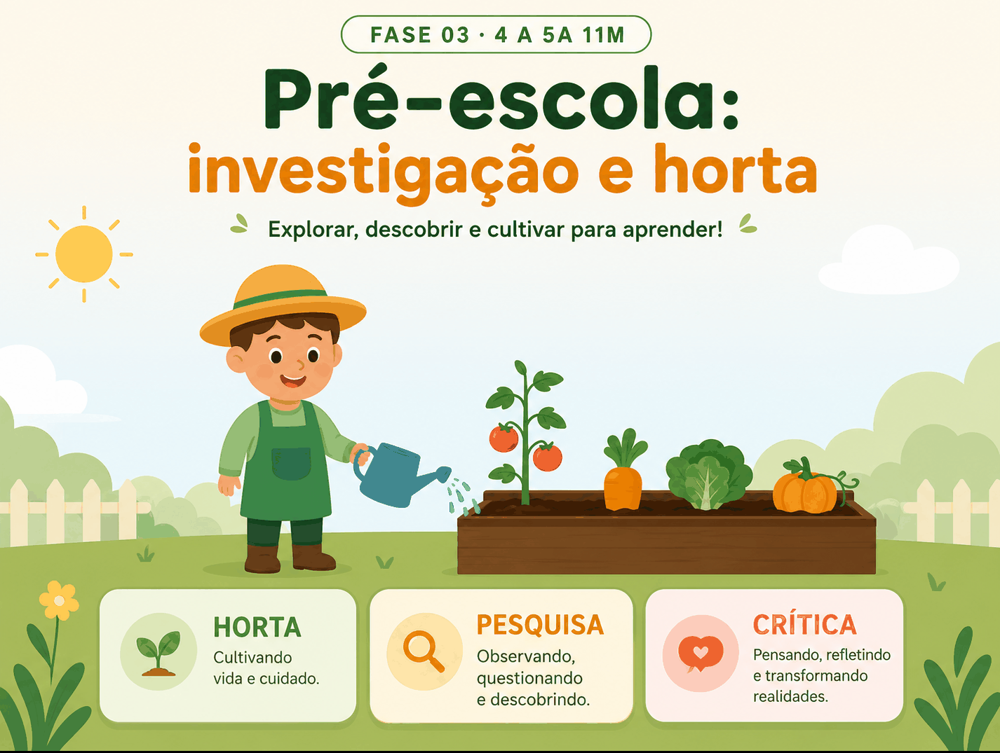

Currículo & Prato
Edição 2026 do Caderno Pedagógico. Como o Currículo em Movimento do DF e a Base Nacional Comum Curricular (BNCC) conversam com a alimentação escolar — uma matriz prática para professores e nutricionistas da Educação Infantil (0–5 anos).

A edição 2026 do Caderno Pedagógico do PAE-DF reúne referências atuais que conectam primeira infância, currículo e cuidado nutricional na rotina das creches e pré-escolas.
Nesta página, os destaques que costuram a teoria de primeira infância à rotina concreta da creche e da pré-escola — para a Proposta Pedagógica e para a próxima conversa em reunião pedagógica.
Desemparedamento da infância.
Crianças aprendem com o corpo, com a terra, com a água, com o vento. A escola que abre suas portas para o pátio, a horta e o quintal multiplica as oportunidades de educação alimentar real.
“Crianças aprendem com o corpo, com a terra, com a água, com o vento. Manter a infância presa entre quatro paredes é privá-la do principal território de aprendizagem: o mundo vivo.”
Instituto Alana · Criança e Natureza
“Crianças de 0 a 6 anos são alvos prioritários do marketing de ultraprocessados, e suas preferências alimentares são moldadas antes mesmo da alfabetização.”
Instituto Alana · Criança e Consumo · 2022
“Garantir alimentação adequada e saudável na escola é proteger o direito ao desenvolvimento integral — não é favor, não é benefício, é direito constitucional.”
Instituto Alana · Prioridade Absoluta
Implicações práticas para a EI do DF
Horta como sala de aula viva
Cada turma com canteiro próprio. Plantam, regam, observam, colhem. O nutricionista articula: o que é colhido entra no prato da semana — fechando o ciclo da experiência.
Trajetos sensoriais
O caminho até o refeitório é currículo. Passar pela horta, parar para cheirar uma erva, ver as cores das frutas — antes do prato, o sentido.
Refeições ao ar livre
Quando possível, lanche no pátio. Toalha no chão, comida em bandejas comunitárias — reaproxima a refeição da experiência social ampla.
Visita ao produtor
Articulação com a Gerência de Alimentação Escolar da Secretaria de Estado de Educação do Distrito Federal (SEEDF). Os produtores da Região Integrada de Desenvolvimento do Distrito Federal e Entorno (RIDE) abastecem o Programa Nacional de Alimentação Escolar (PNAE) — conhecê-los conecta a criança ao território.
“Descasque mais. Desembale menos. Cozinhe junto. Coma com a criança, sem celular na mesa. Essas quatro frases, repetidas com afeto, valem mais do que qualquer cartilha.”
Inspirado em Instituto Alana · Criança e Consumo · 2022Nurturing Care Framework.
Modelo internacional para a primeira infância, lançado na 71ª Assembleia Mundial da Saúde como roteiro para os Objetivos do Desenvolvimento Sustentável. Articula cinco domínios de atenção integral — quando a creche assume essa moldura, a alimentação se revela uma das engrenagens centrais.
Boa saúde
Garantir que as crianças tenham acesso a cuidados de saúde adequados.
Nutrição adequada
Promover alimentação adequada para o crescimento e desenvolvimento.
Cuidados responsivos
Oferecer atenção, afeto e respostas consistentes às necessidades da criança.
Segurança e proteção
Assegurar ambientes seguros e livres de violência ou abuso.
Oportunidades de aprendizagem
Estimular o desenvolvimento cognitivo, emocional e social desde o início da vida — por meio de brincadeiras e interações.
Fonte: Organização Mundial da Saúde (OMS), Fundo das Nações Unidas para a Infância (UNICEF), Banco Mundial — Nurturing Care Framework (2018), apud Fundo Nacional de Desenvolvimento da Educação (FNDE) / UNICEF, Temperando o Currículo, 2025, p. 81.
Como a creche apoia o pleno potencial.
Ações concretas que a creche pode adotar para apoiar o pleno potencial da criança por meio da alimentação. Use junto à Proposta Pedagógica como roteiro de autoavaliação.
Fonte: FNDE/UNICEF, Temperando o Currículo, 2025, p. 84.
Como estão os hábitos alimentares das crianças brasileiras.
Conduzido pelo Ministério da Saúde e pela UFRJ, o Estudo Nacional de Alimentação e Nutrição Infantil (ENANI) 2019 traz números que orientam a prioridade da EAN nas creches e pré-escolas.
| Consumo no dia anterior | De 6 a 23 meses | De 24 a 59 meses |
|---|---|---|
| Diversidade alimentar mínima (≥ 5 grupos) | 3 em cada 5 consumiram | 2,7 em cada 5 consumiram |
| Alimentos fonte de vitamina A | 2 em cada 5 consumiram | 1,5 em cada 5 consumiram |
| Alimentos ultraprocessados | 4 em cada 5 consumiram | 4,7 em cada 5 consumiram |
| Não consumo de frutas e hortaliças | 1 em cada 5 não consumiu | 1,4 em cada 5 não consumiu |
Quase todas as crianças brasileiras consomem ultraprocessados diariamente — e a presença desse consumo cresce entre 2 e 5 anos, exatamente quando a creche e a pré-escola podem fazer a maior diferença. A escola pública, com seu cardápio do PNAE rico em alimentos in natura e da agricultura familiar (45% AF, 85% in natura, máx. 10% ultraprocessados — Res. FNDE 4/2026), é frequentemente a refeição mais saudável do dia da criança brasileira.
Cada hábito construído na Educação Infantil é uma proteção contra a estatística que esses números retratam.
Fonte: BRASIL (2019), Estudo Nacional de Alimentação e Nutrição Infantil — ENANI, apud FNDE/UNICEF, Temperando o Currículo, 2025, p. 86.
Como a escola constrói o que dura.
A escola é coautora da memória afetiva alimentar da criança. Cheiros, sabores e texturas vividos na creche se transformam em referências que duram a vida toda.
“As refeições compartilhadas no refeitório, os lanches preparados com cuidado pela escola e partilhados nas festividades e até os momentos de espera na fila para o lanche tornam-se parte do repertório emocional e afetivo da infância. Quando esse ambiente é acolhedor, respeita a individualidade alimentar e promove hábitos saudáveis com afeto, ele contribui significativamente para uma relação positiva com a comida.”
FNDE · UNICEF · Temperando o Currículo · 2025 · p. 87Quando a EAN vira Proposta Pedagógica.
Caso de referência destacado pelo Temperando o Currículo: o projeto “Comer Bem Faz Bem”, do Centro Municipal de Educação Infantil (CMEI) Bom Jesus, em Minas Gerais. Coordenado em parceria pela nutricionista, gerente de Educação Infantil da SME, supervisora pedagógica, vice-diretora e diretora.
“A alimentação está ligada diretamente à aprendizagem, pois uma criança bem alimentada mostra uma melhor disposição para aprender e desenvolver suas habilidades, contribuindo para um melhor crescimento e desenvolvimento integral (cognitivo, ponderal, intelectual e motor) das crianças na instituição educativa e fora dela. […] O objetivo geral deste projeto é estimular uma alimentação saudável para toda a comunidade escolar (crianças de 0 a 5 anos de idade, pais e responsáveis, além de todos os servidores envolvidos) de forma dinâmica e criativa.”
CMEI Bom Jesus · apud FNDE/UNICEF · 2025 · p. 162Quatro elementos que explicam o sucesso
Coordenação compartilhada
Nutricionista + gerente de Educação Infantil da SME + supervisão pedagógica + direção da unidade.
Comunidade escolar inteira no escopo
Crianças, pais, responsáveis e todos os servidores — ninguém fica de fora.
Articulação com os 5 campos da BNCC
EAN não é apêndice, é eixo transversal — atravessa todos os campos de experiência.
Documentação e divulgação
Mídias sociais permitem replicação por outras unidades. Está incluído no PPP — política institucional, não evento avulso.
Para a SEEDF, o caso é modelo aproveitável como referência de como integrar EAN à Proposta Pedagógica de unidades da rede pública do DF.
Aleitamento materno na creche.
A Nota Técnica FNDE nº 3049124/2022 trata do aleitamento materno e da alimentação complementar no contexto do PNAE. Documento essencial para o berçário das unidades de Educação Infantil da rede do DF — complementa as orientações da Res. FNDE 4/2026.
Extração, armazenamento e transporte
Procedimentos padronizados para o leite humano da casa à creche.
Recepção e oferta na unidade
Recepção, armazenamento, manipulação e oferta do leite humano nas Unidades de Educação Infantil.
Sala de amamentação
Espaço dedicado, acolhedor, com privacidade — direito da mãe trabalhadora e da criança.
Capacitação de manipuladores e cuidadores
Formação técnica continuada para a equipe que recebe e oferta o leite humano.
Crianças parcial ou não amamentadas
Diretrizes específicas para situações em que o leite materno não está disponível.
Introdução da alimentação complementar
Quando, como e o quê — a partir dos seis meses, com supervisão nutricional.
Em parceria com o UNICEF e o Ministério da Saúde, o FNDE também publicou uma série de quatro vídeos sobre o passo a passo de extração, armazenamento, recebimento, transporte e oferta do leite materno na creche — material útil para formação de equipes.
Fonte: FNDE/UNICEF, Temperando o Currículo, 2025, p. 85.
Documentos consultados.
Documentos oficiais que embasam os complementos desta página. Para o quadro completo do marco legal, veja o Cap. 01 · Marco legal.
Educação Alimentar e Nutricional: Temperando o Currículo
Publicação que sistematiza marcos do desenvolvimento, sinais de fome e saciedade, abordagens por faixa etária, ENANI 2019 e Nurturing Care.
Acessar publicação → Instituto AlanaCriança e Natureza · Desemparedamento da infância
Programa do Instituto Alana sobre o direito da criança ao mundo vivo — referência conceitual do Cap. 06 do Caderno 2026.
Acessar programa → Instituto Alana · 2022Criança e Consumo
Publicidade de alimentos e a infância brasileira. Base do princípio político de criticidade adotado pelo Currículo em Movimento DF.
Acessar programa → Ministério da Saúde · 2019Guia Alimentar para Crianças Brasileiras Menores de 2 Anos
Fonte da tabela de sinais de fome e saciedade — base do modelo de alimentação responsiva da OMS.
Acessar guia → MS / UFRJ · 2019ENANI 2019 · Relatório 5 · Alimentação Infantil
Retrato nacional dos hábitos alimentares de crianças de 6 a 59 meses — base estatística para priorização da EAN.
Acessar relatório → OMS · UNICEF · Banco Mundial · 2018Nurturing Care Framework · documento (PT)
Marco internacional para a primeira infância — cinco domínios de atenção integral lançados na 71ª Assembleia Mundial da Saúde. Versão em português, hospedada pela Fiocruz/IFF.
Acessar documento →